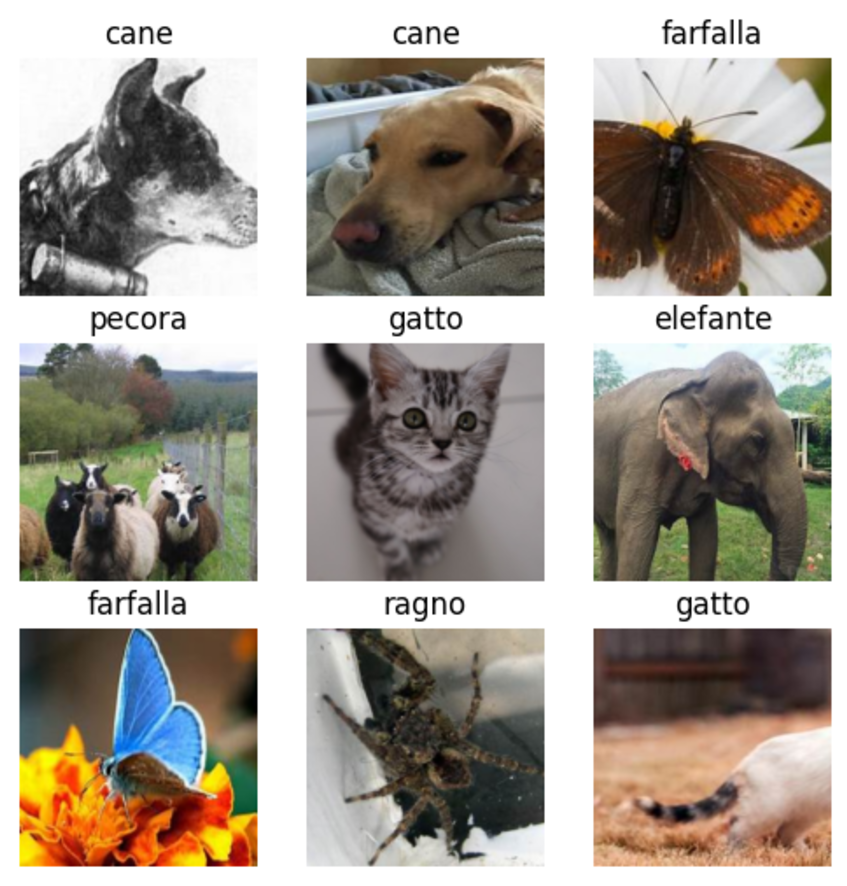
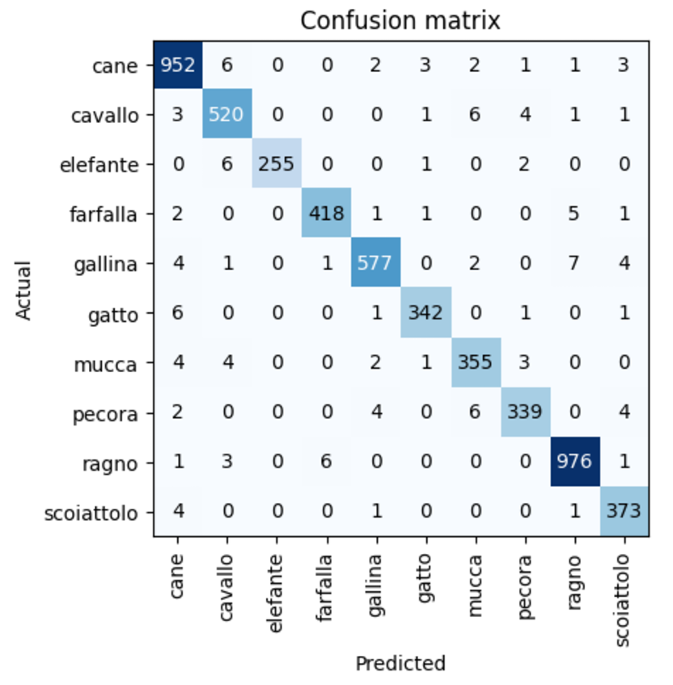
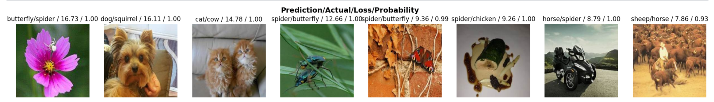

import kagglehub
# Download latest version
path = kagglehub.dataset_download("alessiocorrado99/animals10")
print("Path to dataset files:", path)Fast development & deployment of deep learning applications
test
first-post
A brief walkthrough of how to rapidly develop and deploy simple deep learning models, that are on par with the state of the art.
Hello!
After not having touched machine learning, or deep learning & AI in any developmental capacity for quite some time, personal and professional projects made it the opportune moment to go back and get the back catalog actually published.
That is what this blogpost is for! here, i am going to take a beginners view to deep learning & AI, and present it in as accessible a format as possible - the goal is that you should be able to follow along the major concepts with only minimal coding or machine learning knowledge.
While AI and deep learning can seem intimidating, a majority of the complexity is to be found in the attempts to optimize the training process itself computationally. The main task and ideas of deep learning i hold - are very easy to grasp. The deep learning community also owes a great deal to the opensource spirit of thousands of practitioners around the world, who have made som very, very powerful tools that we will be using today.
With those tools, we will be able to achieve very much, with very little code, as you will see soon.
First, a little theory around deep learning & transfer learning are in order, however. Feel free to skip it if you dont feel you need the reminder!
Deep learning, neural nets & Transfer learning
Almost all of the most advanced machine learning models today rely on a special architecture called a neural net. Among these are - ALL LLM chatbots(ChatGPT, Gemini, LLama, Claude). Most computer visions tasks(x-ray diagnostics, object recognition) and recommender systems(Spotify, Netflix) The neural net is ofcourse, inspired by the human brain, and its vast interconnectivity. A brain has neurons, and so a neural net’s optimizable parameters are also called neurons, to honor this inspiration.
This analogy to the human brain is fine - and not wrong. However, i find that it leads alot of misconceptions about neural nets when left on its own because of one very important misunderstanding. And that is, that unlike the human brain, neural nets (atleast on their own, it seems) CANNOT do the amazingly huge array of problem solving that we humans can do. Even if amazing, i implore you to always remember:
A neural net, is a machine learning model that predicts things - just like any other machine learning model! It just uses a neural architecture to solve very specific problems. This is even the case for the most advanced AI systems in the world today, like the generate chatbots, which i would like to explain in a later post.

What makes a neural net special I feel is best understood in comparison, so let us take what is probably the most well known model, the regression model as an example.
Let’s try to predict apple sales price from a variety of factors, (height, weight, harvesting time) In a regression model, apple sales price would be our dependent variable, and the apple attributes (height, weight, harvesting time) the indepdent variables - the ones we use to predict the dependent variable with. To find out how important (or unimportant) each independent variable is on our apple sales price however, we need to train our model.
Training a model i find, is often one of the most confused parts of machine learning for any outsider or beginner - fraught with mythologizing assumptions and preconceptions around what it is, and how you do it.
In purely practical terms however, training is really very simple - both for regression AND for neural nets. Training, is about tweaking the value of the independent variables, to better predict the dependent variable. That’s it.
For regression, the most common algorithm used is called ordinary least squares. And after running that, we would be able to see the value or weight, the singular independent variable has.
For a neural net, the process would be largely the same. However, the one important distinction is the nature of the independent variables. For the regression model, we would specify each variable explicitly “this is how much height contributes to salesprice” With a neural net, we would instead make an arbitrary amount of “blank” or arbitrary weights, that dont correspond to anything specific at all at first.
We then use an algorithm called backpropagation (just like we used OLS for regression). Using backpropagation, we optimize these initial weights to make our predictions more accurate.
So in summary - for most models, we specify which characteristics we want to look at and optimize. For neural nets, we make the machine “find out” which parameters mean what.
Building our model
The task we are tackling today, is image recognition, which is something that was almost impossible just ten years ago before deep learning had made some more advancements. We are going to be making a classifier model to detect a range of animals.
The first thing we are going to do, is to set up our environment. You can do this yourself, running it on your own machine or a Linux server. For this demonstration i am going to be using an online environment, which is probably the easiest. The benefits are both time saving - as their environment comes with all the packages you might need. But they also provide computation on demand! Most services give you a set quota per week, but it is often generous enough for several small projects like this!
I choose Kaggle as mine, but Google colab is another excellent option.
Setup:
First we download and set a path to the kaggle environment for our chosen dataset.
import fastai
import pathlib
import streamlit as st
from fastai.vision.all import *
from fastai.learner import load_learner
from PIL import ImageOps
from io import BytesIOAfter we have our imports, we now have our dataset in our environment. The next step, is preparing the data to get loaded into our deep learning model. We are using fast.AI’s dataloaders functionality. This provides us with a huge range of functionality for loading our data, but also orchestrates it in away suitable for learning. This is called batching. Here is a sample of the images we have loaded in:
# Create DataLoaders
dls = dblock.dataloaders(path)
# Show a batch of images
dls.show_batch(max_n=9, figsize=(6,6))
A lot happened here in just 1 line - first, fastAI was able to take the pathobject, containing the path to our files. Then it’s converted that into suitable batches which are just about ready for training. Also, dont worry about the italian labels - we can change them later when we actually display our app!
Next, we are ready to train our model!
What we are going to be doing, is transfer learning. This is a technique in which we take an existing deep learning model that has been pretrained (usually on enormous amounts of data) and then use our dataset to only only train or “fine tune” a very small portion of the model - usually the end, which is known as the head of the model.
learn = vision_learner(dls, resnet18, metrics=error_rate)
learn.fine_tune(6)As variables we input our dataloaders, and then resnet18 - which is a state of the art image recognition model. We then fine-tune for 6 epochs, which are 6 runs throug the entire dataset.
![Training metrics(images/trainingdata.PNG)
Our model performs exceedingly well, achieving an error rate of 2,44% after just six epochs, corresponding to an overall model accuracy of 97,56%
We can check which combinations that the model is having trouble with with a confusion matrix
interp = ClassificationInterpretation.from_learner(learn)
interp.plot_confusion_matrix()
This is already really good. We can take a look at what the parts the machine struggled with the most
interp.plot_top_losses(8, nrows=1)
The image aboce shows what our model predicted is in the image, and the label, followed by the loss, and the probability or how sure the model was of its prediction.
As we can see, the very first image it does get wrong, believing it is a butterfly when it is in actuality a spider. However, many of the other top images, are clearly labeled incorrectly. Such as number 2, which is labeled as squirrel, or number 3, which is labeled cow! Even if the dog does look a bit squirrellike if you ask me, mislabelings like this are not helpful, and should really be removed!
We can clean our data by manually removing incorrected items like this (or relabeling), or even automated label verification, using another model to authenticate label accuracy!
Working with data like this, and ensuring accuracy and precision in what you feed your models, is really the most important part of deep learning, as so many amazing pre-trained models exist already for almost any purpose.
With that said, our model is complete and we can export it
#Model export
learn.export()
path = Path()
path.ls(file_exts='.pkl')Now we are ready for deployment! If you are like me, and like to see rapid results, there are a great many options for fast deployment of models and python code. We are going to be using streamlit
First, we write a short introduction to our app, welcoming visitors# Preamble
st.title("Animal Classifier App")
st.write("""
This application uses a fine-tuned **ResNet-18** model to classify images into 10 different animal categories.
The model has been trained on a dataset of animal images, and it predicts with high confidence for known categories.
""")Next, we can finally do something about the italian labeling! so we create a simple python dictionary, and use it to map the labels to their corresponding english counterpart.
# Display the animal categories
st.subheader("Animal Categories")
name_mapping = {
'cavallo': 'horse',
'pecora': 'sheep',
'elefante': 'elephant',
'gatto': 'cat',
'scoiattolo': 'squirrel',
'gallina': 'chicken',
'ragno': 'spider',
'mucca': 'cow',
'cane': 'dog',
'farfalla': 'butterfly'
}
st.write(", ".join([f"**{v}**" for v in name_mapping.values()]))
st.write("""
Upload an image of an animal to see the classifier in action!
""")Now we import our model, and use streamlits library to make a widget for uploading files
EXPORT_PATH = pathlib.Path(“model3.pkl”) # Define the path to your model
learn_inf = load_learner(EXPORT_PATH) # Load the learner
uploaded_file = st.file_uploader(“Choose an image…”, type=[“jpg”, “jpeg”, “png”])
We are almost there! now all we need to do, is to pass the image into our model and show the predictions. We also do some error handling, to make sure that we only accept images without crashing
img = None
if uploaded_file:
try:
# Read and process the uploaded image
file_bytes = BytesIO(uploaded_file.read())
img = PILImage.create(file_bytes)
img = ImageOps.fit(img, (224, 224)) # Resize if necessary
st.image(img.to_thumb(256, 256), caption="Uploaded Image")
# Make prediction
pred_class, pred_idx, probs = learn_inf.predict(img)
# Map the predicted class to its English label
english_label = name_mapping.get(pred_class, pred_class) # Fallback to original if not in mapping
st.write(f"Prediction: {english_label}")
st.write(f"Confidence: {probs[pred_idx]:.2f}")
except Exception as e:
st.error(f"Error during prediction: {e}")
else:
st.warning("Please upload an image to classify.")And that’s it! You’ve now made your very own image classifier in a minimum of steps.
If you want to host your project, you have to create a github repository, and add your project as a .py file, along with your model and a requirements.txt to handle the dependencies of the project!
I have a demonstration live here: https://spvao5wuyengcgcebunrqs.streamlit.app/